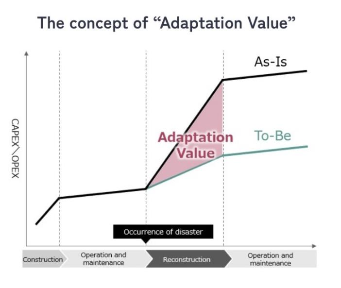

Brief description of this exhibition
-
In order for private companies to invest more money in
adaptation measures, it is necessary to make it possible for
everyone to be able to judge the return on investment for
adaptation measures.
This consortium is working on the development of DX that
makes it possible to visualize and quantify “Adaptation Value”
and the construction of an adaptation finance approach.
-
This exhibit is a simulation that visualizes the effects of
reducing disaster damage before and after the implementation of
adaptation measures using a 3D model. It also introduces
examples of adaptation measures that are useful for reducing
disaster damage, as well as financial schemes that promote the
implementation of adaptation measures.
